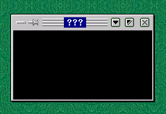
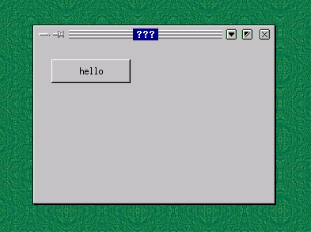
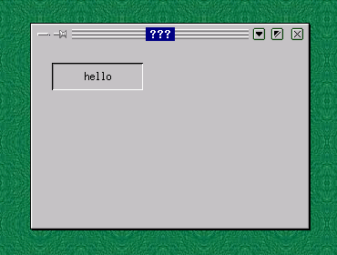

Xlib is a library that allows you to draw graphics on the screen of any X server, local or remote, using the C language. All you need to do is include <X11/Xlib.h>, link your program using the -lX11 switch, and you are ready to use any of the functions in the library.
For example, say you want to create and show a window on your local machine. You can write the following:
Listing 1: example1.cpp
#include <X11/Xlib.h>
#include <unistd.h>
main()
{
// Open a display.
Display *d = XOpenDisplay(0);
if ( d )
{
// Create the window
Window w = XCreateWindow(d, DefaultRootWindow(d), 0, 0, 200,
100, 0, CopyFromParent, CopyFromParent,
CopyFromParent, 0, 0);
// Show the window
XMapWindow(d, w);
XFlush(d);
// Sleep long enough to see the window.
sleep(10);
}
return 0;
}
You can compile the program with the following command:
prompt$ g++ test.cpp -L/usr/X11R6/lib -lX11 prompt$ ./a.out
and voilà, you have a window on your screen for 10 seconds:
The purpose of this article is to show you some simple classes that you can use when developing Xlib applications. We will create an example application that has a window with one button on it. The button will be a custom button we develop using only the Xlib library.
You might be asking yourself "why don't we just use a widget library, like QT, or GTK?". These are valid questions. I use QT, and find it very useful when developing C++ applications targeted for the Linux platform.
The reason I created these classes was to get a better understanding of the X Window System. It forced me to figure out exactly what was going on under the hood in libraries like QT and GTK. Once I had finished, I realized that the classes I created were actually useful.
So hopefully you will find this article educational, and be able to use the classes presented in your own applications.
Now let's dive into some code. We'll go over some basic features of Xlib in this section.
The first class I created was the display class, which was in charge of opening and closing a display. You'll notice that in example1.cpp, we don't close our display properly with XCloseDisplay(). With this class, it will be closed before the program exits. Our example now looks like this:
Listing 2: example2.cpp
#include <unistd.h>
#include "xlib++/display.hpp"
using namespace xlib;
main()
{
try
{
// Open a display.
display d("");
// Create the window
Window w = XCreateWindow((Display*)d,
DefaultRootWindow((Display*)d),
0, 0, 200, 100, 0, CopyFromParent,
CopyFromParent, CopyFromParent, 0, 0);
// Show the window
XMapWindow(d, w);
XFlush(d);
// Sleep long enough to see the window.
sleep(10);
}
catch ( open_display_exception& e )
{
std::cout << "Exception: " << e.what() << "\n";
}
return 0;
}
Nothing spectacular, really. Just opens and closes a display. You'll notice in the implementation that the display class defines the Display* operator, so all you have to do is cast the object to get the actual Xlib Display pointer.
Also notice the try/catch block. All of the classes in this article throw custom exceptions to signal error conditions.
Next I wanted to make window creation easier, so I added a window class to the mix. This class creates and shows a window in its constructor, and destroys the window in its destructor. Our example now looks like this(pay no attention to the event_dispatcher class, we will go over that next):
Listing 3 : example3.cpp
#include "xlib++/display.hpp"
#include "xlib++/window.hpp"
using namespace xlib;
class main_window : public window
{
public:
main_window ( event_dispatcher& e ) : window ( e ) {};
~main_window(){};
};
main()
{
try
{
// Open a display.
display d("");
event_dispatcher events ( d );
main_window w ( events ); // top-level
events.run();
}
catch ( exception_with_text& e )
{
std::cout << "Exception: " << e.what() << "\n";
}
return 0;
}
Notice that our main_window class inherits from xlib::window. When we create the main_window object, the base class' constructor gets called, which creates the actual Xlib window.
You probably noticed the event_dispatcher class in the last example. This class takes events off of the application's queue, and dispatches them to the correct window.
This class is defined as the following:
Listing 4 : event_dispatcher.hpp
class event_dispatcher
{
// constructor, destructor, and others...
[snip...]
register_window ( window_base *p );
unregister_window ( window_base *p );
run();
stop();
handle_event ( event );
}
The event_dispatcher passes events to window classes via the window_base interface. All of the classes in this article that represent windows derive from this class, and are able to catch messages from the dispatcher. Once they register themselves with the register_window method, they start receiving messages. window_base is declared as the following, and all classes deriving from it must define these methods:
Listing 5 : window_base.hpp
virtual void on_expose() = 0;
virtual void on_show() = 0;
virtual void on_hide() = 0;
virtual void on_left_button_down ( int x, int y ) = 0;
virtual void on_right_button_down ( int x, int y ) = 0;
virtual void on_left_button_up ( int x, int y ) = 0;
virtual void on_right_button_up ( int x, int y ) = 0;
virtual void on_mouse_enter ( int x, int y ) = 0;
virtual void on_mouse_exit ( int x, int y ) = 0;
virtual void on_mouse_move ( int x, int y ) = 0;
virtual void on_got_focus() = 0;
virtual void on_lost_focus() = 0;
virtual void on_key_press ( character c ) = 0;
virtual void on_key_release ( character c ) = 0;
virtual void on_create() = 0;
virtual void on_destroy() = 0;
Let's see if this actually works. We will try to handle a ButtonPress event in our window. Add the following code to our main_window class:
Listing 6 : example4.cpp
class main_window : public window
{
public:
main_window ( event_dispatcher& e ) : window ( e ) {};
~main_window(){};
void on_left_button_down ( int x, int y )
{
std::cout << "on_left_button_down()\n";
}
};
Compile the code, run the example, and click inside of the window. It works! The event_dispatcher gets a ButtonPress message, and sends it to our window via the predefined on_left_button_down method.
Next let's try to draw in our window. The X Window system defines the concept of a "graphics context" that you draw into, so I naturally created a class named graphics_context. The following is the class' definition:
Listing 7 : graphics_context.hpp
class graphics_context
{
public:
graphics_context ( display& d, int window_id );
~graphics_context();
void draw_line ( line l );
void draw_rectangle ( rectangle rect );
void draw_text ( point origin, std::string text );
void fill_rectangle ( rectangle rect );
void set_foreground ( color& c );
void set_background ( color& c );
rectangle get_text_rect ( std::string text );
std::vector get_character_widths ( std::string text );
int get_text_height ();
long id();
private:
display& m_display;
int m_window_id;
GC m_gc;
};
You pass this class a window id, and a display object, and then you can draw as much as you want using the drawing methods. Let's try it out. Add the following to our example:
Listing 8 : example5.cpp
#include "xlib++/display.hpp"
#include "xlib++/window.hpp"
#include "xlib++/graphics_context.hpp"
using namespace xlib;
class main_window : public window
{
public:
main_window ( event_dispatcher& e ) : window ( e ) {};
~main_window(){};
void on_expose ()
{
graphics_context gc ( get_display(),
id() );
gc.draw_line ( line ( point(0,0), point(50,50) ) );
gc.draw_text ( point(0, 70), "I'm drawing!!" );
}
};
The on_expose() method is called whenever the window is displayed, or "exposed". In this method we draw a line and some text in the window's client area. When you compile and run this example, you should see something similar to the following:

The graphics_context class is used extensively in the rest of this article.
You may also notice a few helper classes in the above code, point and line. These are small classes I created, all having to do with shapes. They don't look like they are necessary now, but they will be helpful later on if I have to perform complex operations with them, like transformations. For example, it is easier to say "line.move_x(5)", than to say "line_x += 5; line_y += 5;". It is much cleaner, and less error-prone.
Enough of the simple stuff - now let's move on to creating actual widgets that can be reused. Our focus now will be on creating a command button that we can use in an application. The requirements of this button are as follows:
This seems like a simple control, but implementing all of this will be more than trivial. The following sections describe this.
First off, we have to create a separate window for this command button. The constructor calls the show method, which in turn calls the create method, which is responsible for window creation:
Listing 9 : command_button.hpp
virtual void create()
{
if ( m_window ) return;
m_window = XCreateSimpleWindow ( m_display, m_parent.id(),
m_rect.origin().x(),
m_rect.origin().y(),
m_rect.width(),
m_rect.height(),
0, WhitePixel((void*)m_display,0),
WhitePixel((void*)m_display,0));
if ( m_window == 0 )
{
throw create_button_exception
( "could not create the command button" );
}
m_parent.get_event_dispatcher().register_window ( this );
set_background ( m_background );
}
Looks alot like the window class' constructor, doesn't it? First it creates the window with the Xlib API XCreateSimpleWindow(), then it registers itself with the event_dispatcher so it will receive events, and finally it sets its background.
Notice that we pass the parent window's id into the call to XCreateSimpleWindow(). We are telling Xlib that we want our command button to be a child window of the parent.
Because the command button registered itself with the event_dispatcher, it will receive on_expose() events when it needs to draw itself. We will use the graphics_context class to draw both states.
The following is the code that will be used for the "not pressed" state:
Listing 10 : command_button.hpp
// bottom
gc.draw_line ( line ( point(0,
rect.height()-1),
point(rect.width()-1,
rect.height()-1) ) );
// right
gc.draw_line ( line ( point ( rect.width()-1,
0 ),
point ( rect.width()-1,
rect.height()-1 ) ) );
gc.set_foreground ( white );
// top
gc.draw_line ( line ( point ( 0,0 ),
point ( rect.width()-2, 0 ) ) );
// left
gc.draw_line ( line ( point ( 0,0 ),
point ( 0, rect.height()-2 ) ) );
gc.set_foreground ( gray );
// bottom
gc.draw_line ( line ( point ( 1, rect.height()-2 ),
point(rect.width()-2,rect.height()-2) ) );
// right
gc.draw_line ( line ( point ( rect.width()-2, 1 ),
point(rect.width()-2,rect.height()-2) ) );
When we finally compile and run this code later on, the button will look like this:
Alternatively, when the button is pressed, the following code will be used to draw it:
Listing 11 : command_button.hpp
gc.set_foreground ( white );
// bottom
gc.draw_line ( line ( point(1,rect.height()-1),
point(rect.width()-1,rect.height()-1) ) );
// right
gc.draw_line ( line ( point ( rect.width()-1, 1 ),
point ( rect.width()-1, rect.height()-1 ) ) );
gc.set_foreground ( black );
// top
gc.draw_line ( line ( point ( 0,0 ),
point ( rect.width()-1, 0 ) ) );
// left
gc.draw_line ( line ( point ( 0,0 ),
point ( 0, rect.height()-1 ) ) );
gc.set_foreground ( gray );
// top
gc.draw_line ( line ( point ( 1, 1 ),
point(rect.width()-2,1) ) );
// left
gc.draw_line ( line ( point ( 1, 1 ),
point( 1, rect.height()-2 ) ) );
And the finished product will appear like the following:
This seems like a pretty simple task - draw the "pressed" state when the mouse is down over the control, and draw the "not pressed" state when the mouse is up. This isn't entirely correct, though. When you press and hold the left mouse button over our control, and move the mouse out of the rect, the command button should draw the "not pressed" state, even though the left mouse button is currently pressed.
The command_button class uses two member variables to handle this - m_is_down, and m_is_mouse_over. Initially, when the mouse is pressed down over our control(see on_left_button_down()), we put ourselves into the down state, and refresh the control. This results in the command button drawing itself pressed. If, at any time, the mouse moves out of the rect of our control(see on_mouse_exit()), m_is_mouse_over is set to false, and the control is refreshed. This results in the command button drawing itself in the "not pressed" state. If the mouse then moves into the rect of the control, m_is_mouse_over is toggled back to true, and the control is drawn pressed. Once the mouse button is released, we set ourselves to the "not pressed" state, and refresh ourselves.
This is a pretty simple task. We basically want the user of this command button to be able to get and set the text displayed. Here is the code:
Listing 12 : command_button.hpp
std::string get_name() { return m_name; }
void set_name ( std::string s ) { m_name = s; refresh(); }
The refresh() is in there so that the controls redraws itself with the new text.
We want the user of this command button to know when we were clicked. To do this, we will generate an "on_click()" event. The following is the definition of the command_button_base class:
Listing 13 : command_button_base.hpp
namespace xlib
{
class command_button_base : public window_base
{
public:
virtual void on_click () = 0;
};
};
What we are basically saying here is that "we support all events that a window does, plus one more - on_click()". The user of this button can derive a new class from it, implement the on_click() method, and take the appropriate action.
I really hope you enjoyed this article. We went over many features of Xlib, and wrapped them in C++ classes to make Xlib development easier in the future. If you have any questions, comments, or suggestions about this article, or about Xlib development in general, please feel free to email me.